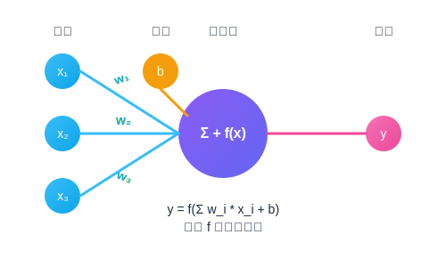
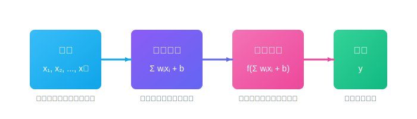
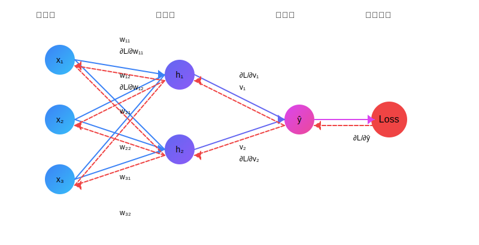
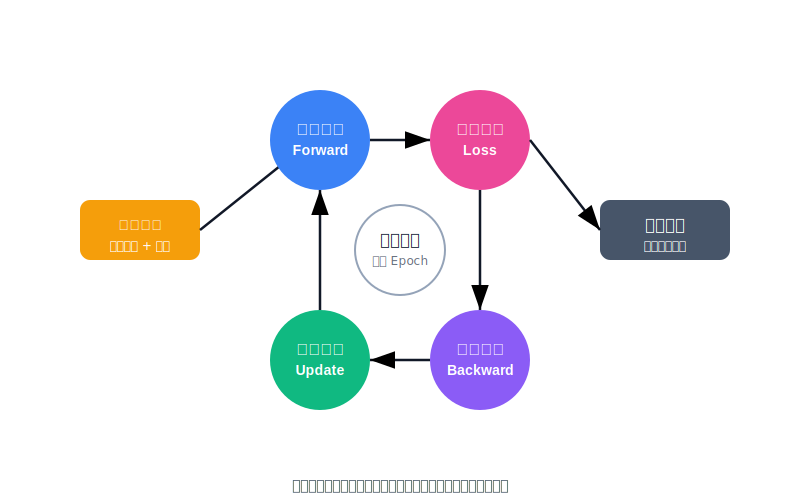
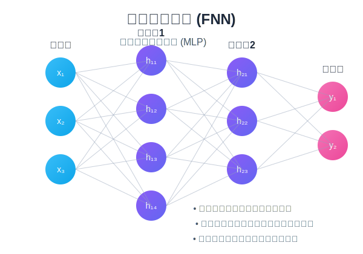
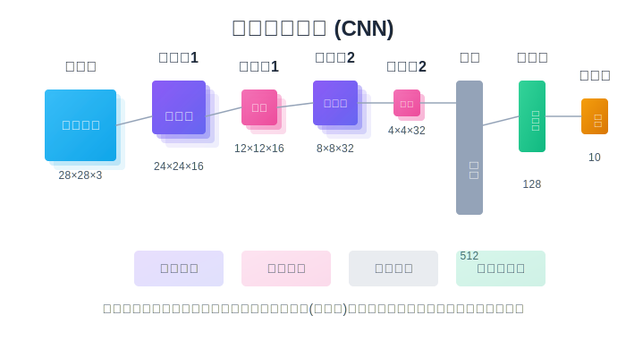
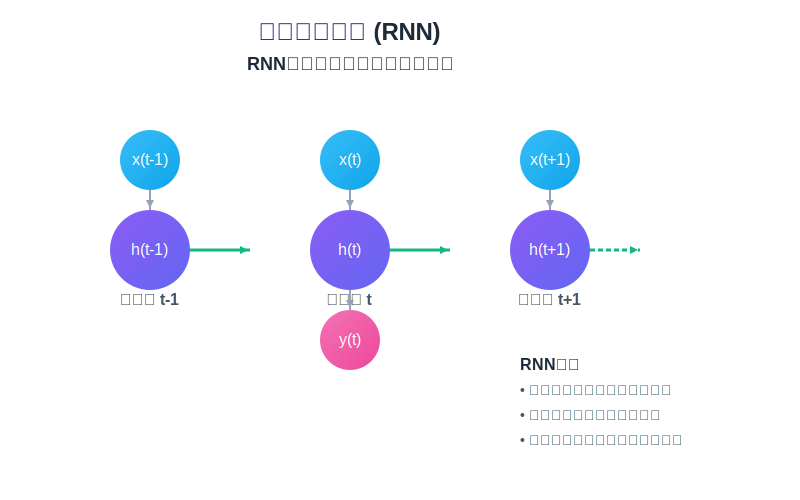
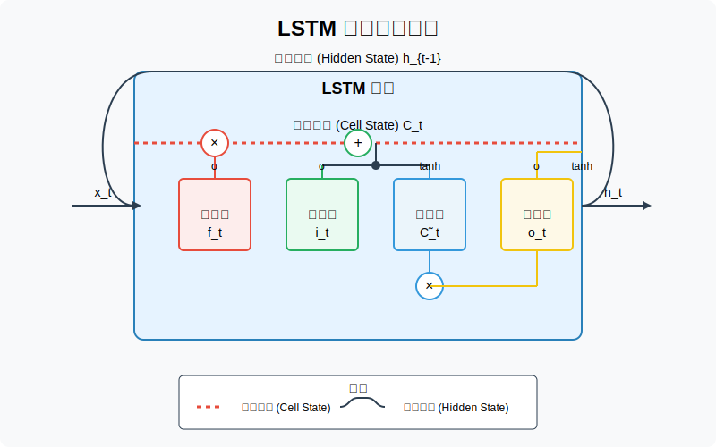

神经网络
人工智能的基石
神经网络（Neural Networks）是一种受人脑结构启发的计算模型，能够通过学习从数据中找出模式和规律。作为深度学习的基础，它们在图像识别、自然语言处理、游戏AI等众多领域展现出非凡能力。
模式识别
数据驱动
自适应学习
非线性建模
简介
想象一下，你想教一台计算机识别猫的图片。你不会写死板的规则（比如"如果看到两个尖耳朵并且有胡须，那就是猫"），因为猫的姿态、品种、光线各不相同，规则很难覆盖所有情况。神经网络提供了一种不同的方法：让计算机自己从大量示例中学习识别猫的模式。
神经网络（Artificial Neural Networks, ANNs）是深度学习的基石，它们的设计灵感来源于人脑中神经元相互连接、传递信息的方式。我们可以把它看作一个高度灵活、能够自我调整的学习机器，目标是从数据中找出隐藏的规律，用于分类（这是猫还是狗？）、预测（明天的股价是多少？）、生成（创作一首诗或一幅画）等各种任务。
💡 关键特点
- 数据驱动：从大量实例中学习，而非依赖人工预设规则
- 非线性建模：能捕捉复杂的、非线性的模式和关系
- 分布式表示：知识分散在多个连接权重中存储
- 自适应学习：能从错误中学习并调整参数
人脑神经元 vs 人工神经网络
生物神经元

- • 树突：接收来自其他神经元的信号
- • 细胞体：整合信号
- • 轴突：传递信号到其他神经元
- • 突触：神经元之间的连接点
人工神经元
- • 输入(x)：来自其他神经元的信号
- • 权重(w)：调整信号强度
- • 激活函数：决定是否"触发"
- • 输出：传递给下一层神经元
神经网络结构
可以将神经网络想象成一个信息处理的"工厂"，里面有不同的"工人"（神经元）和"生产线"（层），通过特定的"流程"（连接和计算）来加工原始数据，最终得到成品（预测结果）。
神经网络结构可视化
调整下方滑块，查看不同复杂度的神经网络结构
1
5
10
1
3
5
1
4
8
1
3
5
调整上面的参数，观察神经网络结构的变化。隐藏层越多、节点越多，网络的复杂度和学习能力越强，但也更容易过拟合。
神经元 (Neuron / Node)
概念: 工厂里的基本"工人"。
功能: 每个工人接收来自上游工位（其他神经元）或者原材料仓库（外部输入）的信息。他不是简单地传递信息，而是会评估每个信息来源的重要性（通过权重加权），汇总这些信息，并考虑一个固有的"积极性"或"门槛"（偏置）。最后，基于总的"刺激"强度，通过一个决策规则（激活函数）来决定自己要输出什么信号给下游工位。
神经元工作流程
1. 接收多个输入信号 (x₁, x₂, ...)
2. 为每个输入分配权重 (w₁, w₂, ...)
3. 计算加权和并加上偏置 (b)
4. 将结果传入激活函数 (f)
5. 输出激活函数的结果
数学表示 (单个神经元):
\[ y = f\left(\sum_{i=1}^{n} w_i \cdot x_i + b\right) \]
这就像工人在计算：最终输出 = 决策规则(∑(信息i × 重要性i) + 固有积极性)
反向传播
反向传播是神经网络这个"学习工厂"进行自我改进的核心机制。可以把它想象成一个基于"绩效评估和责任分配"的学习过程。
核心思想: 当工厂生产出的产品（预测）与预期（真实标签）不符时，需要找出是哪些工人、哪些环节的参数（权重和偏置）设置不当，并进行调整。这个过程是从结果倒推回原因。
数学角度：链式法则
反向传播基于微积分中的链式法则，通过计算损失函数对每个权重的偏导数（梯度）来确定如何调整权重。
\[ \frac{\partial L}{\partial w} = \frac{\partial L}{\partial y} \cdot
\frac{\partial y}{\partial z} \cdot \frac{\partial z}{\partial w} \]
其中L是损失函数，y是输出，z是神经元的加权输入，w是要调整的权重。
反向传播过程可视化

前向传播
反向传播
反向传播步骤:
1
前向传播 (Forward Propagation)
比喻: "试生产"。一批原材料（训练样本）进入工厂，按照当前的工人参数（权重/偏置）和流程（网络结构）进行加工，最终在输出层得到一个"样品"（预测值）。
输入 → 隐藏层(们) → 输出层 → 预测值
例如, 对于一个简单的网络:
\begin{align}
z^{[1]} &= W^{[1]}x + b^{[1]} \\
a^{[1]} &= g^{[1]}(z^{[1]}) \\
z^{[2]} &= W^{[2]}a^{[1]} + b^{[2]} \\
\hat{y} &= g^{[2]}(z^{[2]})
\end{align}
2
计算损失 (Loss Calculation)
比喻: "质量检测"。将"样品"（预测值）与"设计蓝图"（真实目标值）进行比较，使用量化标准（损失函数）来计算出试生产的"误差"或"不合格程度"。
均方误差 (MSE)
\[ MSE = \frac{1}{n}\sum_{i=1}^{n}(y_i - \hat{y}_i)^2 \]
适用于回归问题，衡量预测值与真实值差异的平方。
交叉熵损失 (Cross Entropy)
\[ CE = -\sum_{i=1}^{n}y_i\log(\hat{y}_i) \]
适用于分类问题，当预测错误且自信度高时惩罚更大。
3
反向传播 (Backward Propagation)
比喻: "责任追究与改进建议"。质量检测员（算法）拿着误差报告，从最后一个工位（输出层）开始反向追溯。
计算梯度:
利用链式法则，对损失函数关于每个权重和偏置的偏导数进行计算：
\begin{align}
\frac{\partial L}{\partial W^{[2]}} &= \frac{\partial L}{\partial
\hat{y}} \cdot \frac{\partial \hat{y}}{\partial z^{[2]}} \cdot
\frac{\partial z^{[2]}}{\partial W^{[2]}} \\
\frac{\partial L}{\partial W^{[1]}} &= \frac{\partial L}{\partial
\hat{y}} \cdot \frac{\partial \hat{y}}{\partial z^{[2]}} \cdot
\frac{\partial z^{[2]}}{\partial a^{[1]}} \cdot \frac{\partial
a^{[1]}}{\partial z^{[1]}} \cdot \frac{\partial z^{[1]}}{\partial
W^{[1]}}
\end{align}
4
参数更新 (Parameter Update)
比喻: "调整参数，优化生产"。根据"责任报告"（梯度），工厂管理者（优化算法）对每个"阀门"（权重）和"基础热情"（偏置）进行微调。
基本梯度下降更新规则:
\begin{align}
W^{[l]} &= W^{[l]} - \alpha \frac{\partial L}{\partial W^{[l]}} \\
b^{[l]} &= b^{[l]} - \alpha \frac{\partial L}{\partial b^{[l]}}
\end{align}
其中 α 是学习率，控制更新的步长。
学习率 (η)
调整参数的"步子大小"
优化器
高级更新规则(如Adam, RMSprop)
迭代训练循环
这个"试生产 → 质检 → 追责与建议 → 调整优化"的循环，会针对大量的训练数据反复进行很多轮（Epochs）。通过多次迭代，神经网络逐渐学习到更优的参数，提高预测准确性。

反向传播练习与测试
概念理解选择题
1. 反向传播算法的核心思想是：
A. 从输入层到输出层逐层计算网络的输出
B. 从输出层到输入层逐层计算损失函数对参数的梯度
C. 随机初始化神经网络的权重
D. 同时调整神经网络中的所有参数
2. 在反向传播过程中，链式法则的作用是：
A. 将复杂的神经网络分解为多个简单的层
B. 计算每一层的激活值
C. 计算损失函数对网络各层参数的偏导数
D. 优化神经网络的学习率
3. 在参数更新过程中，学习率(η)的作用是：
A. 决定网络的层数
B. 控制每次参数更新的步长大小
C. 计算损失函数的值
D. 确定训练的轮数(Epochs)
4. 在反向传播训练过程中，下列哪项不是标准步骤：
A. 前向传播计算输出
B. 计算损失函数
C. 删除表现不佳的神经元
D. 通过梯度下降更新参数
反馈与讨论
完成上述习题后，请思考：
- 哪些问题对你来说比较困难？为什么？
- 反向传播的哪部分概念你仍然不太清楚？
- 你是否能将反向传播应用到实际的机器学习问题中？
常见神经网络类型
不同的工厂（网络结构）擅长处理不同类型的原材料（数据）和生产任务。以下是几种最常见的神经网络类型及其应用场景。
前馈神经网络 (FNN / MLP)
基础

比喻: 最简单的流水线工厂。信息按部就班地从一个车间流到下一个，没有回头路。
特点: 全连接层，信息只向前传递，没有循环或反馈。
应用: 适合处理相互独立的特征数据，如表格数据分析、简单分类任务。
卷积神经网络 (CNN)
图像识别
空间特征
局部感知

比喻: 专门处理"视觉信息"的工厂。有特殊的"扫描设备"（卷积层）和"聚焦工具"（滤波器）。
特点: 利用卷积操作提取局部特征，大幅减少参数数量。
应用: 图像识别、物体检测、人脸识别、医学影像分析等。
循环神经网络 (RNN)
序列数据
时间特性

比喻: 拥有"短期记忆"的工厂。处理当前任务时，会考虑之前处理过的信息。
特点: 有内部循环，允许信息持续存在，适合处理序列数据。
应用: 文本处理、语音识别、时间序列预测、机器翻译等。
长短期记忆网络 (LSTM/GRU)
长期依赖

比喻: 拥有"高级笔记系统"的工厂。内部设计精巧的"门"，可以选择性地记忆或遗忘信息。
特点: 解决普通RNN的梯度消失问题，能捕获长期依赖关系。
应用: 长文本理解、语音识别、机器翻译、复杂时间序列预测。
更多高级网络架构
自编码器 (Autoencoders)
擅长"摘要与复述"的网络。将数据压缩成低维表示，再尝试重建原始数据。常用于特征提取、降维和异常检测。
生成对抗网络 (GAN)
由"伪造大师"（生成器）和"鉴定专家"（判别器）组成的对抗系统。能生成高质量的假数据，如逼真的图像、文本和音频。
强化学习网络 (DQN, A3C)
通过"奖惩机制"学习的网络。通过与环境交互，学习最佳策略以最大化累积奖励。应用于游戏AI、机器人控制和自动驾驶。
适合您任务的神经网络选择器
根据您的数据类型和任务需求，选择最合适的神经网络架构
Transformer
注意力革命
Transformer模型于2017年在论文《Attention Is All You Need》中被提出，是自然语言处理领域的革命性突破。它摒弃了之前主流的循环神经网络（RNN）和卷积神经网络（CNN）架构，完全依赖自注意力机制来建模序列数据之间的依赖关系。
自注意力
并行计算
长距离依赖
编码器-解码器
提出背景
在Transformer出现之前，处理序列数据（如文本）的主流模型是RNN（及其变体LSTM、GRU）。但它们存在一些固有的局限性：
顺序计算的瓶颈
RNN像是一个按部就班的读者，必须一个词一个词地按顺序阅读（处理）句子。这意味着，无论句子多长，都必须花费与长度成正比的时间。这种串行处理方式难以利用现代GPU的并行计算能力，导致训练非常耗时。
比喻: 想象一下逐字逐句地阅读一本厚书，你无法同时阅读多个章节，也无法跳跃式地阅读，效率受限。
长距离依赖问题
虽然LSTM和GRU通过门控机制缓解了RNN的梯度消失问题，但在处理非常长的序列时，信息在逐步传递过程中仍然可能丢失或"稀释"，导致模型难以捕捉距离很远的词语之间的关联。
比喻: 就像在阅读一本很长的小说时，要准确记住第一章某个细节对最后一章情节的影响，对这位"按部就班的读者"来说仍然很困难，记忆可能会模糊。
核心诉求
研究者们渴望一种新的模型架构，能够：
- 并行处理序列： 摆脱RNN的顺序依赖，充分利用硬件加速能力。
- 直接捕捉长距离依赖： 无论两个词在序列中相距多远，都能轻松地建立它们之间的联系。
- 聚焦关键信息： 在处理或生成某个词时，能够智能地"关注"输入序列中最相关的部分。
Transformer正是为了满足这些需求而设计的。
详细架构
交互式Transformer架构
鼠标悬停在组件上查看详细说明
选择一个组件查看详情
鼠标悬停在架构图的组件上可以查看详细说明
翻译任务数据流转过程
Transformer在机器翻译任务中的工作原理
以下是一个完整的机器翻译过程，展示数据在Transformer模型中的流转过程，以"I love deep learning"翻译为中文为例：
1
输入处理阶段
源语言句子"I love deep learning"被分词为["I", "love", "deep", "learning"]，每个词被转换为词嵌入向量（通常512维），并添加位置编码以保留词序信息。
I
[0.2, -0.3, ..., 0.5]
love
[0.7, 0.1, ..., -0.2]
deep
[-0.1, 0.8, ..., 0.3]
learning
[0.5, 0.4, ..., 0.6]
+ 位置编码
2
编码器处理阶段
词嵌入向量依次通过6层编码器。在每层中，多头自注意力机制让每个词关注整个句子中的其他词，计算注意力权重（例如"deep"对"learning"的关注度高）。然后通过前馈网络进一步处理并提取特征。
"deep" → "learning" 注意力权重:
0.85
3
编码器输出传递
编码器最终输出表示整个源句子语义的上下文向量，这些向量被传递给解码器的交叉注意力层，作为解码器生成目标语言的参考。
4
解码器初始输入
解码开始时，输入特殊的起始标记<BOS>（"开始"），转换为词嵌入向量并添加位置编码。目标语言序列会逐步生成，初始仅有起始标记。
<BOS>
[0.1, 0.2, ..., -0.3]
5
解码器处理阶段
解码器首先通过掩码自注意力只关注已生成的词（防止"偷看"未来），然后交叉注意力层将编码器的输出和当前解码状态结合，让解码器"理解"源句子的语义。例如，生成"我"后，会通过交叉注意力找到与"I"相关的编码器表示，以此推断下一个词。
<BOS>
我
?
交叉注意力: "我" 关注 "I"
(0.92)
6
输出预测
解码器输出经过线性层映射到目标语言词汇表大小的向量，然后通过softmax转换为每个词的概率分布。例如，在生成第二个词时，"爱"可能有0.85的概率，"喜欢"有0.10的概率。
爱:
喜欢:
其他词:
7
自回归生成
选择概率最高的词（如"爱"）作为当前输出，并将其作为下一步的输入添加到已生成序列中。重复步骤4-7，直到生成特殊的结束标记<EOS>或达到最大长度。最终输出可能是"我 爱 深度 学习"。
<BOS>
我
爱
深度
学习
<EOS>
最终翻译结果: "我 爱 深度 学习"
整体流程总结
整个过程是端到端自动进行的，无需人工干预即可完成从源语言到目标语言的翻译。模型通过大量平行语料训练，学习不同语言之间的语义映射。Transformer的并行计算能力和对长距离依赖的捕捉能力使其在翻译任务上表现卓越。
位置编码可视化
Transformer如何记住词语位置？
由于Transformer中的自注意力机制是并行计算的，它本身无法区分序列中词语的顺序。位置编码通过将位置信息"融入"词向量中解决了这个问题。
下图展示了原始Transformer论文中使用的正弦/余弦位置编码的模式。横轴代表编码的维度，纵轴代表序列中的位置。
负值 (-1)
正值 (+1)
位置编码的特点：
- 不同位置具有唯一的编码
- 编码的值范围在[-1,1]之间
- 不同维度编码周期由短到长，能捕捉不同尺度的位置相似性
- 相对位置接近的词在某些维度上有相似的编码
- 即使面对未见过的序列长度，这种编码方案也能自然扩展
公式： 对于位置 pos 和维度 i，
\begin{align}
PE_{(pos,2i)} &= \sin\left(\frac{pos}{10000^{2i/d}}\right) \\
PE_{(pos,2i+1)} &= \cos\left(\frac{pos}{10000^{2i/d}}\right)
\end{align}
为什么使用正弦/余弦函数？
正弦和余弦函数具有以下特性：
- 可以通过线性投影将 \(PE(pos+k)\) 表示为 \(PE(pos)\) 的线性函数
- 这使模型能够轻松学习关注相对位置
- 在不同维度上使用不同频率，创建了丰富的表示空间
现代模型的改进：
虽然原始Transformer使用了这种固定的正弦位置编码，但现代模型如BERT和GPT系列采用了可学习的位置嵌入，让模型自行优化位置表示。RoPE、ALiBi等是更新的位置编码方法。
位置编码维度特性可视化
低维度 (i=0,1)
高频变化，捕捉局部位置差异
中间维度 (i≈d/4)
中等频率变化
高维度 (i≈d/2)
低频变化，捕捉全局位置关系
不同维度的周期性变化使模型能同时关注局部和全局的位置关系，这对于理解语法结构和长距离依赖至关重要。
自注意力机制
Transformer的核心 - 计算每个词与其他词的关联度
自注意力机制使Transformer能够灵活捕捉序列中任意位置之间的依赖关系。计算过程可以通过查询(Q)、键(K)、值(V)三者的交互来理解。
自注意力计算公式：
\begin{align}
Q &= X \cdot W^Q \\
K &= X \cdot W^K \\
V &= X \cdot W^V \\
Attention(Q, K, V) &= softmax\left(\frac{Q \cdot K^T}{\sqrt{d_k}}\right) \cdot V
\end{align}
其中 \(X\) 是输入词向量, \(W^Q\), \(W^K\), \(W^V\) 是参数矩阵, \(d_k\) 是键向量的维度。
点击词语查看其与其他词的注意力关系
详细计算过程
选中词的计算过程：
点击任一词语查看详细计算过程...
自注意力计算过程
1.
映射查询、键、值
每个词的嵌入向量与三个不同的权重矩阵相乘，生成查询(Q)、键(K)和值(V)向量
2.
计算注意力分数
通过点积计算查询向量与所有键向量的相似度，并进行缩放和Softmax归一化
Attention(Q,K,V) =
softmax(QKT/√dk)V
3. 加权聚合
使用注意力权重对值向量进行加权求和，得到每个位置的上下文化表示
多头注意力机制
从多个角度捕捉不同类型的相关性
多头注意力机制允许模型同时从不同的表示子空间学习信息，每个"头"可能关注不同类型的模式。例如，一个头可能关注语法关系，而另一个头可能关注语义相关性。
为什么需要多头？
通过使用多个注意力"头"，模型可以：
- 并行关注不同特征 - 每个头可以专注于捕捉序列中不同类型的依赖关系
- 增强表示能力 - 融合多个视角的信息，形成更丰富的特征表示
- 提高鲁棒性 - 多头机制类似于集成学习，减少单一注意力模式可能带来的偏差
原始Transformer使用了8个头，每个头的维度是64，保持总维度不变（8×64=512）。
注意： 每个头的输出维度比单一注意力机制小，但拼接后的多头输出总维度与输入相同，确保信息不会丢失。
Transformer变体
基于原始架构的改进与发展
自2017年提出以来，Transformer架构引发了大量的改进和变体，适应不同任务需求并解决原始架构的局限性。
BERT
只使用Transformer的编码器部分，通过掩码语言模型预训练，擅长文本理解任务。
由Google于2018年提出
GPT
只使用Transformer的解码器部分，通过自回归式预测下一个词进行预训练，擅长文本生成。
由OpenAI于2018年提出
T5
使用完整的编码器-解码器架构，将所有NLP任务统一为文本到文本的转换问题，实现多任务学习。
由Google于2019年提出
高效Transformer
通过稀疏注意力、线性复杂度算法等方式优化自注意力机制，解决处理长序列时的二次方复杂度问题。
包括Reformer、Longformer、Linformer等
2017
原始Transformer
2018
BERT, GPT
2019-2020
T5, 高效变体
2020-至今
大规模模型
GPT
GPT: 下一代文本生成技术
GPT (Generative Pre-trained Transformer) 是一种革命性的语言模型，专注于自然语言的生成能力。它通过大规模预训练和自回归建模，实现了前所未有的文本创作、对话和理解能力。
自回归建模
预训练+微调
零样本学习
Prompt工程
从Transformer到GPT的演进
Transformer 的出现为处理自然语言提供了强大的工具，而 GPT 则是在此基础上，进一步专注于"生成"任务的模型。
比喻：
如果 Transformer 是一座强大的"语言工厂"，那么 GPT 就是其中专门负责"创作与表达"的部门，它不是判断哪个更对，而是自己动手写文章、回答问题、续写故事。
GPT 的关键演进路径
1
GPT-1 (2018)
1.2亿参数提出"预训练 + 微调"范式。用大量文本进行语言建模预训练（即学习"下一个词是什么"），然后在具体任务上微调。
2
GPT-2 (2019)
15亿参数模型规模大幅提升，展示出惊人的文本生成能力，被 OpenAI 一度"限制发布"。
3
GPT-3 (2020)
1750亿参数引入了1750亿参数，彻底颠覆了传统的NLP模型设计。引导式学习（Few-shot, Zero-shot）成为主流，不再依赖任务微调。
4
GPT-4 / 4-turbo (2023+)
超万亿参数引入多模态、长期记忆、工具调用等Agent能力，向"AI助手"演化。
GPT 架构特点
输入嵌入层 + 位置编码
Masked自注意力层
前馈神经网络
× N层
线性层 + Softmax输出
-
只用Transformer的Decoder部分
GPT简化了Transformer架构，移除了编码器部分，专注于生成能力。
-
自回归建模（Auto-regressive Modeling）
每次预测下一个词，像人类写作一样，一词接一词地生成内容。
-
左到右的注意力（Masked Attention）
确保生成过程符合自然语言顺序，当前位置只能看到之前的词，不能"偷看"后面内容。
比喻：
GPT像是一个"小说家"，他一边写一边想，当前要写的词只能参考前面写的内容，不能偷看后面（这就是Masked
Attention）。
GPT全称为Generative Pre-trained Transformer，其架构完全基于Transformer的Decoder部分。相比原始的Encoder-Decoder结构，GPT做了以下关键简化与优化：
1 仅使用Decoder堆叠
每一层Decoder块包含三个主要组件：
- 带掩码的多头自注意力
- 前馈网络（Feed Forward Network, FFN）
- 残差连接（Residual）与层归一化（LayerNorm）
2 自回归建模
模型的训练和推理都遵循从左到右的顺序：
- 给定前n个词，预测第n+1个词
- 使用掩码注意力确保每个位置只能关注前面位置
3 嵌入层设计
输入的每个词被映射为一个向量，再加上位置编码：
Input = TokenEmbedding + PositionalEncoding
4 输出机制
模型最后通过一个线性层 + Softmax：
- 将每个位置的输出向量映射到词汇表大小
- 输出每个词的预测概率，选出最高概率词
训练过程
GPT 的训练可以拆解为两个关键阶段：预训练（Pretraining）和推理（Inference）
预训练阶段
1
给定前文，预测下一个词
输入示例：
我
今天
早上
在
咖啡馆
预测下一个词
词汇概率分布：
喝咖啡
85%
看书
60%
遇见
40%
训练原理
GPT 通过数十亿文本片段的训练，不断优化预测下一个词的能力，就像一个学生做无数"完形填空"练习，逐渐形成强大的语言理解能力。
损失函数
交叉熵 (Cross Entropy)
优化器
AdamW (带权重衰减的 Adam)
训练数据
书籍、网页、维基百科等多种来源（GPT-3：570GB文本）
推理阶段
2
根据提示(Prompt)生成连贯文本
生成示例：
输入提示(Prompt)：
中国的人工智能未来将会
1
在
2
各个
3
领域
4
发挥
...
持续生成中...
温度 (Temperature)
保守（低温）
创意（高温）
采样策略
Top-k:40
Top-p:0.9
比喻
使用GPT就像与一位创意写手合作，你给出开头，它接着创作。温度调节像是调整这位写手的风格，从循规蹈矩到天马行空。
GPT训练流程可视化
预训练阶段
大规模文本语料
标记化 (Tokenization)
掩码自注意力计算
计算损失 & 更新参数
Loss =
CrossEntropy(预测, 实际下一词)
推理阶段
用户提示 (Prompt)
标记化 (Tokenization)
GPT模型预测
Top-k 采样
温度
Top-p 采样
掩码注意力机制
掩码注意力是GPT训练的关键机制，确保模型在预测时只能"看到"当前位置之前的内容。
数学表示：
\[ \text{Mask}_{ij} = \begin{cases}
0 & \text{if } i \geq j \\
-\infty & \text{if } i < j \end{cases} \]
在自注意力计算中，掩码确保位置 i 只能关注位置 j ≤ i 的内容。这防止了信息泄漏，模型必须真正学会预测，而不是偷看答案。
掩码注意力矩阵可视化
我
喜
欢
机
器
学
我
✓
✕
✕
✕
✕
✕
喜
✓
✓
✕
✕
✕
✕
欢
✓
✓
✓
✕
✕
✕
机
✓
✓
✓
✓
✕
✕
器
✓
✓
✓
✓
✓
✕
学
✓
✓
✓
✓
✓
✓
禁止关注 (-∞)
✓ = 允许计算注意力，✕ = 设置为负无穷大
对角线及其以下可见，确保每个位置只能关注自己及之前的词
训练技巧与高级优化
Batch Training
使用多个样本并行计算，一次性更新梯度，加速训练过程并提高模型稳定性。
batch_size = 256
混合精度训练
使用FP16/FP8代替全FP32，大幅减少显存占用，同时保持数值稳定性。
更低显存占用
更快运算速度
可学习位置编码
不同于原始Transformer的固定正余弦编码，GPT使用可学习的位置嵌入，更加灵活。
position_embeddings
权重共享
Embedding层和输出层共享相同的权重矩阵，有效减少模型参数量，同时提高训练效率。
E
W
梯度累积
处理多个小批量数据后才执行一次参数更新，以模拟大批量训练的效果，同时减少显存占用。
学习率预热与衰减
训练初期使用较小学习率，逐渐增大（预热），然后再逐渐减小，提高模型训练稳定性。
GPT训练损失曲线
训练损失
验证损失
互动实验：GPT生成模拟器
体验GPT是如何逐词生成文本的，并了解温度参数如何影响生成结果。
更确定 (0.1)
更随机 (1.5)
能力与限制
能力（Strengths）
通才能力
对写作、编程、翻译、答题都能应对
零样本学习（Zero-shot）
只需描述任务，无需训练即可完成
上下文理解
能理解输入的语境并生成相关内容
多轮对话能力
可用于构建对话型AI、客服助手、教学系统等
比喻
GPT就像一位见多识广、能言善辩的通才，虽然不完美，但几乎什么话题都能聊上几句。
限制（Limitations）
事实不准确
有时会"一本正经地胡说八道"（幻觉Hallucination）
上下文窗口有限
不能处理过长的输入
对图表、数字逻辑较弱
特别是在GPT-3时代更为明显
不具备"理解"能力
只是预测最可能出现的词
比喻
GPT更像是一个"语言预测引擎"，它并不真正"理解"话题，而是靠庞大的语料库和统计规律来完成预测。
GPT能力剖析
能力雷达图
应用场景适用性
| 应用场景 | 适用性 | 限制 |
|---|---|---|
| 内容创作 |
|
可能生成不准确信息 |
| 代码辅助 |
|
复杂逻辑理解有限 |
| 教育辅导 |
|
需人工验证事实准确性 |
| 数据分析 |
|
数学计算容易出错 |
| 图像理解 |
|
需与视觉模型集成 |
案例分析
擅长任务
文本摘要
GPT能够从长文本中提取关键信息，生成准确简洁的摘要。
创意写作
根据提示生成诗歌、故事、脚本等创意内容，风格多样。
代码解释与生成
解释代码功能、生成简单算法、辅助编程调试。
挑战任务
复杂数学推理
在多步骤数学问题上容易出错，尤其是涉及复杂公式的计算。
实时信息
无法获取训练数据之后的最新信息，对当前事件认知有限。
细粒度图像理解
无法处理或分析图像内容（纯文本模型的限制）。
未来发展方向
工具使用能力
通过插件与外部工具集成，扩展模型功能边界
多模态能力
整合文本、图像、音频等多种输入输出模式
长上下文理解
更长的上下文窗口，增强对长文档的理解与处理
互动测验：认识GPT的典型错误
测试你对GPT模型局限性的理解！尝试判断下面哪些陈述可能来自GPT的"幻觉"。
1. 以下哪个陈述最可能是GPT的"幻觉"？
2. GPT在处理以下哪类任务时最可能出错？
3. 以下关于GPT的说法哪个是错误的？
Prompt工程
Prompt是与GPT对话的"咒语"，掌握Prompt工程技巧是有效利用大语言模型的关键。
Prompt工程的本质
Prompt工程是与大语言模型交互的核心技术，它的本质是：用自然语言设计输入，以引导模型输出你想要的内容。
比喻
想象你是一位魔法师，Prompt就是你的"咒语"。你咏得清晰、精准，AI就会施展出你想要的魔法。
核心技巧
明确具体任务
任务描述越清晰具体，模型回应越准确
模糊：请帮我写个报告
清晰：请写一份关于中国新能源汽车发展趋势的市场研究报告，1500字，包含图表说明
加示例 (Few-shot)
通过实例展示期望的格式和风格
问题: 苹果的营养价值?
回答: 苹果富含维生素C和膳食纤维...
问题: 橙子的功效?
回答: [模型将遵循类似格式回答]
回答: 苹果富含维生素C和膳食纤维...
问题: 橙子的功效?
回答: [模型将遵循类似格式回答]
引导思路
指导模型按步骤思考或分条罗列结果
"请先分析问题本质，然后列出可能的解决方案，最后给出最佳建议。每一步请用标题标明。"
角色扮演
设定身份以获得特定专业领域的回应
"你是一位拥有20年经验的金融分析师，请评估这家公司的财务状况..."
Prompt类型分类
0
Zero-shot Prompt
直接描述任务，不提供任何例子。
请将下面的英文句子翻译成中文：
I am learning to use large language models.
I am learning to use large language models.
选择正确的翻译：
1
One-shot Prompt
提供一个明确的例子，指导模型如何完成任务。
英文：I love you.
中文：我爱你。
英文：You are amazing.
中文：
中文：我爱你。
英文：You are amazing.
中文：
选择正确的翻译：
n
Few-shot Prompt
提供多个例子，引导模型学习任务模式。
英文：Good morning.
中文：早上好。
英文：Thank you very much.
中文：非常感谢。
英文：Where is the restroom?
中文：
中文：早上好。
英文：Thank you very much.
中文：非常感谢。
英文：Where is the restroom?
中文：
选择正确的翻译：
Chain-of-Thought
引导模型逐步推理，尤其适用于数学、逻辑问题。
问题：一辆汽车以每小时60公里的速度行驶，行驶了2小时。它行驶了多少公里？
请一步步思考并给出答案。
请一步步思考并给出答案。
选择正确的答案：
滑动查看更多类型
实用技巧 (Best Practices)
清晰说明任务
❌ 模糊：帮我写个介绍
✅
明确：请用100字介绍一款面向青少年用户的英语学习App，语气轻松、有趣。
指定格式或风格
请以Markdown格式输出内容，包含如下结构：
- 标题
- 简介
- 主要内容（分条）
- 总结
限制语气/角色/输出方式
你现在是一位简历导师。请用HR喜欢的语气，重写这段经历。
你是一位中小学科学老师，请用10岁小朋友能听懂的语言解释"重力"是什么。
嵌入上下文
以下是产品原型说明，请基于这些信息撰写一段用户使用流程描述：
（接上下文文本）
提示模型先"思考"，再"输出"
请先分析用户需求，再列出可行的解决方案，最后总结推荐策略。
引导结构化输出
请将以下文本总结成JSON格式，字段包括："事件"、"时间"、"影响"、"建议"。
Prompt工程口诀
"任务清、例子全，格式准、角色明；
结构化、思路链，引导模型出精品。"
常见误区
| 误区 | 原因说明 | 解决方案 |
|---|---|---|
| 直接让模型做任务 | 模型不知道你想要的格式或重点 | 提供明确的指令和期望输出格式 |
| 指令太短或太泛泛 | 容易导致输出无关、太泛 | 使用详细具体的指令，说明期望长度 |
| 没设定角色或身份 | 模型无法模仿语气或知识背景 | 明确设定模型应扮演的角色 |
| 不限制输出范围 | 输出可能太长、太短或偏离任务 | 明确指定字数、段落数或格式要求 |
| 多任务混写 | 容易导致模型混淆目标，输出变乱 | 拆分为多个小任务，逐步引导 |
互动练习：Prompt优化器
尝试将左侧基础Prompt优化为右侧更高效的版本。拖动滑块查看变化。
基础
进阶
专业
基础Prompt
写一篇关于人工智能的文章
优化后Prompt
请撰写一篇1000字的人工智能发展现状分析文章，重点讨论大语言模型的应用与挑战。包含以下内容：1）发展背景，2）主要技术突破，3）行业应用，4）伦理考量。使用客观专业的语气。请在文章最后总结未来三年可能的发展趋势。
优化要点
- 指定文章长度（1000字）
- 明确主题范围（大语言模型的应用与挑战）
- 提供内容结构（发展背景、技术突破、应用、伦理）
- 设定语气风格（客观专业）
- 要求特定总结（未来三年发展趋势）
学习资源
Prompt工程指南
全面的入门指南，包含从基础技巧到高级策略的详细说明
Prompt模板库
管理各种场景的高效Prompt模板
交互式练习
通过实战练习提升Prompt编写能力，快来和AI对话吧
社区案例分享
用户分享的创意Prompt案例，展示各领域实际应用效果
不断学习和实践是掌握Prompt工程的关键。尝试不同方法，记录效果，持续优化。